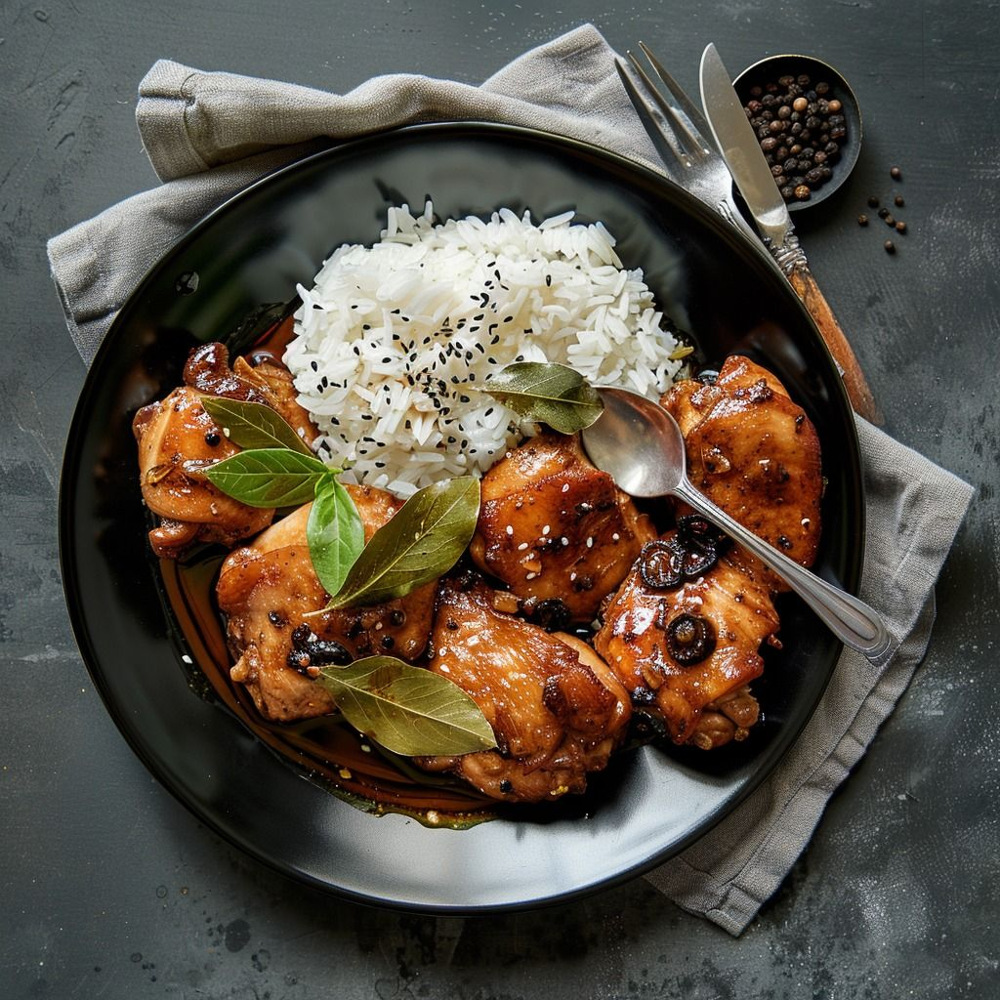

OUR STORY
More Than A Dish
Adobo is more than food. It is a symbol of family, heritage, and Filipino identity. Every Filipino household has its own version, making every Adobo unique and deeply personal. Its rich history predates Spanish colonization and continues to connect generations through tradition and flavor.